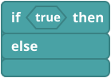
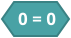
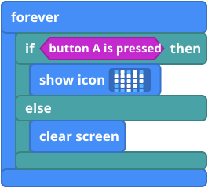
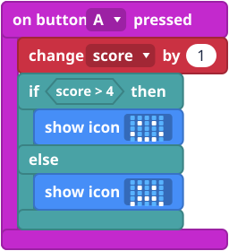
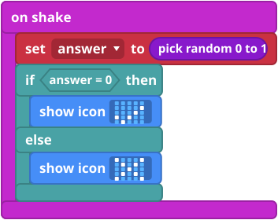

What it is
Sometimes your micro:bit has to choose. if ... then ... else is a fork in the road: if something is true, the blocks in then run. If it is not, the blocks in else run.
The "something" is a question with a yes or no answer, called a condition. Is button A pressed? Is the score bigger than 4? The blocks with pointed ends are conditions.
The blocks
These are in the Logic group, except button A is pressed, which is in Input.


Mini examples


4 then show icon happy else show icon sad">
Try this
- Make the heart example and hold A.
- Change the 4 to another number and see what changes.
- Make the magic ball give three answers, using the + on the if block and pick random 0 to 2.
- Harder: light an LED while a button is held (see Light an LED).
Common mistakes
- Nothing changes. The if is in on start, so it only checks once. Move it into forever.
- The condition will not fit. Conditions are the blocks with pointed ends. Round blocks are values, and they do not fit there.
- It says "=" but I wanted "bigger than". Click the sign in the compare block to change it.
The code in words
JavaScript: if (input.buttonIsPressed(Button.A)) {
basic.showIcon(IconNames.Heart)
} else {
basic.clearScreen()
}
Python: if input.button_is_pressed(Button.A):
basic.show_icon(IconNames.HEART)
else:
basic.clear_screen()
V1 and V2
The same on both.
Teacher notes
- Time: 30 to 40 minutes.
- Ideas covered: conditions (true or false), choosing between two paths, and checking again and again.
- Common confusion: an if inside on start only runs once.
- The block pictures are simplified drawings. Check the real blocks in MakeCode.